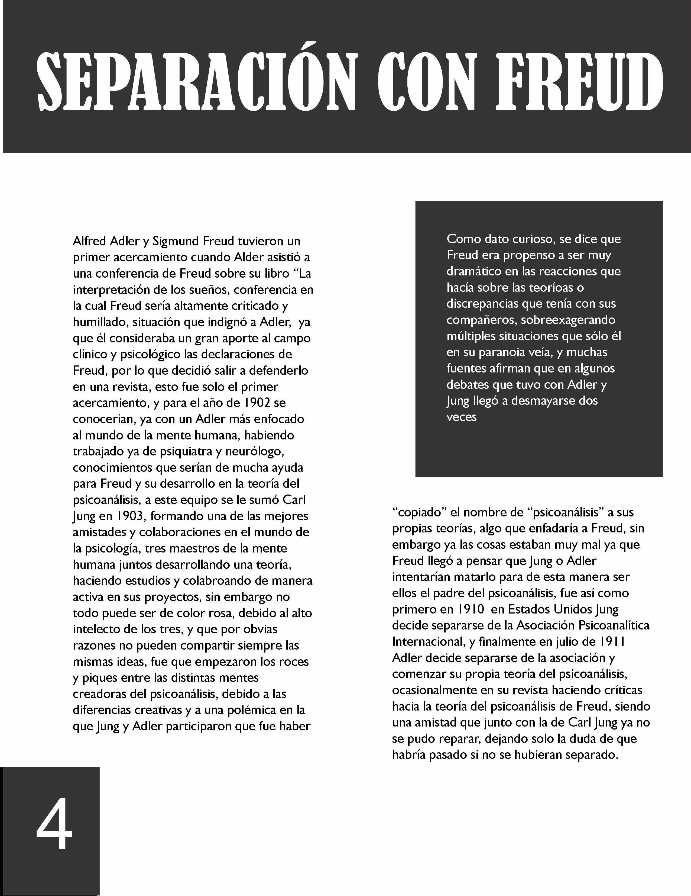
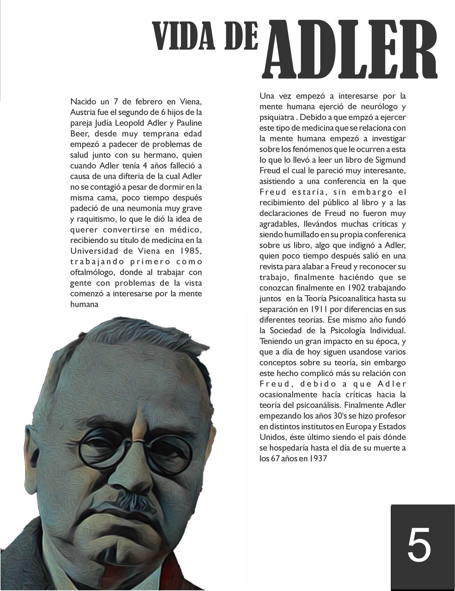
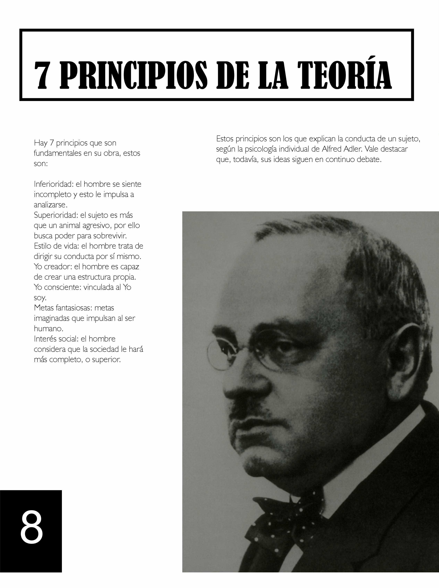
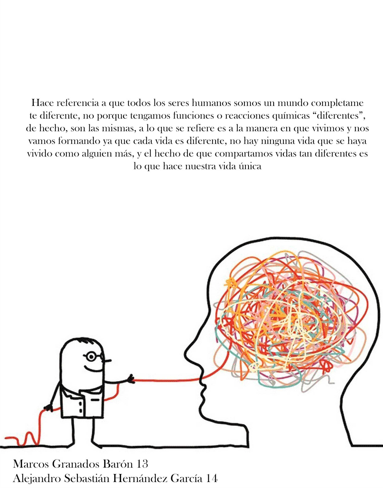

REVISTA |
|
| ; |
VIDA DE ADLER
PSICOLOGÍA INDIVIDUAL
SEPARACIÓN CON FREUD |
|
|
|
|
|
2 INTRODUCCIÓN
3 PSICOLOGÍA INDIVIDUAL
4 SEPARACIÓN CON FREUD
5 VIDA DE ADLER
7 ESTILO DE VIDA
8 PRINCIPIOS DE LA TEORÍA
|
|
|
La psicología individual trata de explicar la personalidad de cada uno desde un enfoque humano y vívido donde es el individuo un participante activo en sus tomas de decisiones, en el cual prevalece un sentimiento de superación por llegar en una condición inferior, de acuerdo a la visión de Adler sobre la persona. Esta teoría nos permite comprender porqué el ser humano busca un propósito de vida y lograr sobresalir, superarse: por otro lado, nos permite tener una idea del porqué otras personas no conciben esa idea y se sienten inferiores ante los demás.
La propuesta psicológica “individualista” adleriana es llamada así porque es alrededor del propio individuo que gira su teoría y donde se le atribuye una participación activa y consciente en sus decisiones. De acuerdo a Cavazzana “la psicología individual ha tomado la tarea de estudiar la personalidad del ser humano como una sola unidad y que ésta se direcciona hacia un propósito” . A su vez, Cloninger propone lo siguiente: “La teoría de Adler, en contraste con las teorías de Freud y Jung, pone énfasis en la lucha consciente de los individuos para mejorar sus vidas”.
Adler creía que la personalidad se desarrolla a través del esfuerzo del individuo por superar debilidades físicas, un esfuerzo al que llamó compensación.
Más tarde, Adler modificó y amplío sus puntos de vista, afirmando que la persona trata de superar los sentimientos de inferioridad que pueden tener o no una base en la realidad. Pensaba que dichos sentimientos a menudo desatan el desarrollo positivo y el crecimiento personal. Sin embargo, algunos individuos que quedan fijados en sus sentimientos de inferioridad, se paralizan y entonces desarrollan lo que Adler llamó complejo de inferioridad.
Después, de nueva cuenta modificó su énfasis teórico en una dirección más positiva cuando concluyó que los esfuerzos por alcanzar la superioridad y la perfección eran más importantes para el desarrollo de la personalidad que la superación de los sentimientos de inferioridad. Sugirió que la persona se esfuerza por la perfección personal y la sociedad a la que pertenece (interés social), estableciendo metas importantes para sí misma y dirigiendo su conducta para lograrlas; éstas no necesitan ser alcanzables de manera realista, lo que importa es que la persona actué como si lo fueran. Aunque se esfuercen por la perfección individual y social, cada individuo desarrolla un conjunto particular de direcciones y creencias que se convierten en su estilo de vida.
|
|
Adler antes de su separación con Freud ya tenía pensada una teoría propia sobre la psique humana, la cual se basaba principalmente en dos complejos uno de inferioridad, y otro de superioridad, dicha teoría la llamó “Teoría de la Psicología Individual”, aunque originalmente se llamó al igual que la de Freud, teoría del psicoanálisis, sin embargo, esta es otra historia que en esta revista verán más adelante. Como se mencionó antes su fundamento se basa en dos complejos, uno de inferioridad y otro de superioridad, el complejo de inferioridad es aquel que que nace del sentimiento de inferioridad, sentirnos menos que los demás en cuanto a cualidades cognitivas y cualitativas, esto es un sentimiento que se inculca desde muy pequeños, siendo un claro ejemplo nuestra relación con nuestros papás, que desde pequeños dependemos de ellos, esto no significa que sea malo, sino que este sentimiento de inferioridad es el que nos mueve a querer mejorar, es aquel que marca nuestras metas y guía nuestro propio camino; por otro lado está el sentimiento de superioridad, el cual es aquel que hace que nos sintamos superiores, y el que alimenta nuestra autoestima, sin embargo se vuelve un combustible negativo para el ego, y que en exceso nos puede llevar a tener ínfulas de grandeza y arrogancia, sin embargo es el sentimiento que nos indica cuánto hemos progresado y el que reconoce nuestros logros, y esto nace desde el sentimiento de inferioridad, creando un ciclo de retroalimentación que debe ser controlado para no caer en los complejos. Otra parte importante de la Teoría de la Psicología Individual es que cada persona es un caso distinto, y que cada uno es el domador de su propio destino, nosotros escribimos nuestra historia, con nuestras decisiones, acciones y pensamientos, pero éstos igual dependen un poco de nuestra historia personal, de la cual Adler piensa que la parte más importante es la infancia, a diferencia de la teoría sexual de Freud, Adler recalca que la manera en que nuestra infancia es parte crucial de nuestra personalidad, dependiendo del distinto caso en el que el niño sea criado, ya sea sobreprotegido o abandonado, siendo esto un punto de inflexión en su sentimiento de inferioridad, Adler de igual manera considera que la infancia es da el origen a la neurosis de una persona, debido a que es en ésta estapa donde se desarrolla la mayor parte de la personalidad, con el niño asimilando todas las experiencias que le van pasando a lo largo de esta etapa; por otro lado la psicosis se da por el desvalimiento social y en el refugio de sus fantasías, éstas siendo muy remarcadas por Adler ya que es muy importante comprender el origen y significado de las fantasías de la persona para poder dar una explicación completa acerca de su psicosis; como anteriormente se explicó, el autoestima tiene mucho que ver con los sentimientos, tanto de inferioridad y superioridad, ya que esta forja la identidad de la persona, y también su camino hacia la autoaceptación, la cual es importante para no desarrollar el complejo de inferioridad. Ésta teoría hoy en día sigue vigente en campos muy importantes para nuestro desarrollo humano, como la educación, que gracias a ésta teoría se pueden implementar métodos de enseñanza para alumnos de distintas personalidad, que impulsen la inclusividad, al igual que en el campo de recursos humanos, enfocándose en el el talento y la búsqueda del desarrollo personal. |
|
|  |
Alfred Adler y Sigmund Freud tuvieron un primer acercamiento cuando Alder asistió a una conferencia de Freud sobre su libro “La interpretación de los sueños, conferencia en la cual Freud sería altamente criticado y humillado, situación que indignó a Adler, ya que él consideraba un gran aporte al campo clínico y psicológico las declaraciones de Freud, por lo que decidió salir a defenderlo en una revista, esto fue solo el primer acercamiento, y para el año de 1902 se conocerían, ya con un Adler más enfocado al mundo de la mente humana, habiendo trabajado ya de psiquiatra y neurólogo, conocimientos que serían de mucha ayuda para Freud y su desarrollo en la teoría del psicoanálisis, a este equipo se le sumó Carl Jung en 1903, formando una de las mejores amistades y colaboraciones en el mundo de la psicología, tres maestros de la mente humana juntos desarrollando una teoría, haciendo estudios y colabroando de manera activa en sus proyectos, sin embargo no todo puede ser de color rosa, debido al alto intelecto de los tres, y que por obvias razones no pueden compartir siempre las mismas ideas, fue que empezaron los roces y piques entre las distintas mentes creadoras del psicoanálisis, debido a las diferencias creativas y a una polémica en la que Jung y Adler participaron que fue haber “copiado” el nombre de “psicoanálisis” a sus propias teorías, algo que enfadaría a Freud, sin embargo ya las cosas estaban muy mal ya que Freud llegó a pensar que Jung o Adler intentarían matarlo para de esta manera ser ellos el padre del psicoanálisis, fue así como primero en 1910 en Estados Unidos Jung decide separarse de la Asociación Psicoanalítica Internacional, y finalmente en julio de 1911 Adler decide separarse de la asociación y comenzar su propia teoría del psicoanálisis, ocasionalmente en su revista haciendo críticas hacia la teoría del psicoanálisis de Freud, siendo una amistad que junto con la de Carl Jung ya no se pudo reparar, dejando solo la duda de que habría pasado si no se hubieran separado.
Como dato curioso, se dice que Freud era propenso a ser muy dramático en las reacciones que hacía sobre las teoríoas o discrepancias que tenía con sus compañeros, sobreexagerando múltiples situaciones que sólo él en su paranoia veía, y muchas fuentes afirman que en algunos debates que tuvo con Adler y Jung llegó a desmayarse dos veces |
|  |
Nacido un 7 de febrero en Viena, Austria fue el segundo de 6 hijos de la pareja Judía Leopold Adler y Pauline Beer, desde muy temprana edad empezó a padecer de problemas de salud junto con su hermano, quien cuando Adler tenía 4 años falleció a causa de una difteria de la cual Adler no se contagió a pesar de dormir en la misma cama, poco tiempo después padeció de una neumonía muy grave y raquitismo, lo que le dió la idea de querer convertirse en médico, recibiendo su título de medicina en la Universidad de Viena en 1985, trabajando primero como oftalmólogo, donde al trabajar con gente con problemas de la vista comenzó a interesarse por la mente humana
Una vez empezó a interesarse por la mente humana ejerció de neurólogo y psiquiatra . Debido a que empzó a ejercer este tipo de medicina que se relaciona con la mente humana empezó a investigar sobre los fenómenos que le ocurren a esta lo que lo llevó a leer un libro de Sigmund Freud el cual le pareció muy interesante, asistiendo a una conferencia en la que Freud estaría, sin embargo el recibimiento del público al libro y a las declaraciones de Freud no fueron muy agradables, llevándos muchas críticas y siendo humillado en su propia conferenica sobre us libro, algo que indignó a Adler, quien poco tiempo después salió en una revista para alabar a Freud y reconocer su trabajo, finalmente haciéndo que se conozcan finalmente en 1902 trabajando juntos en la Teoría Psicoanalítica hasta su separación en 1911 por diferencias en sus diferentes teorías. Ese mismo año fundó la Sociedad de la Psicología Individual. Teniendo un gran impacto en su época, y que a día de hoy siguen usandose varios conceptos sobre su teoría, sin embargo este hecho complicó más su relación con Freud, debido a que Adler ocasionalmente hacía críticas hacia la teoría del psicoanálisis. Finalmente Adler empezando los años 30's se hizo profesor en distintos institutos en Europa y Estados Unidos, éste último siendo el país dónde se hospedaría hasta el día de su muerte a los 67 años en 1937 |
|
|
|
|
|
La tipología gobernante: vivir desde el egoísmo
El estilo gobernante tiene como origen una personalidad agresiva, egoísta y dominante. Es una forma de vivir que se nutre en exclusiva del sentimiento de insignificancia y reacciona desde él con hostilidad. Lejos de superar esta dimensión, se estanca, lo que a su vez se traduce en rencor, desconfianza y en la necesidad de tener el control sobre los demás para que satisfagan lo que uno mismo no puede proveerse.
Tal y como advertía el propio Alfred Adler, la persona que no está interesada en el prójimo, es quien encuentra mayores dificultades en su devenir. Su forma de vivir, pensar, relacionarse y comportarse siempre es problemática. A menudo hasta patológica (narcisismo, agresividad, etc.).
La tipología receptora: existir desde la carencia
Entre los estilos de vida, según Alfred Adler, destaca el perfil receptor. ¿En qué consiste? Estos individuos orquestan toda su existencia y comportamiento en una sola dirección: obtener refuerzos de los demás. La persona receptora tampoco ha superado el sentimiento de inferioridad y, por ello, deriva en relaciones de dependencia y sumisión absoluta.
La tipología evitativa: jugar a ser escapista
Hay quien escapa de toda responsabilidad, quien elude los problemas y es incapaz de mantener cualquier relación. Los evitativos son individuos infantiles que buscan una vida fácil, la gratificación inmediata y alimentarse de lo lúdico para evadirse y no tener que poner nunca los pies en el suelo. Mejor estar en las nubes que tomar el control de la realidad.
Este estilo de vida resulta caótico en todas las esferas, tanto en la social, la laboral y en la personal. Son inestables, poco reflexivos y suelen actuar por mero impulso. Este tipo de personas carecen de todo atisbo de fuerza creativa, se limitan en exclusiva a buscar refuerzos y eludir todo deber o propósito concreto por el que trabajar y esforzarse.
El tipo socialmente útil: personas con intereses y responsabilidades sociales.
El último de los estilos de vida define la tipología más saludable, íntegra y feliz. Los individuos socialmente útiles son los que trabajan cada día para superarse, para limar sus miedos, potenciar sus fortalezas y desactivar el egoísmo. Solo así logran conectar con los demás de manera auténtica. |
|  |
Hay 7 principios que son fundamentales en su obra, estos son:
Inferioridad: el hombre se siente incompleto y esto le impulsa a analizarse.
Superioridad: el sujeto es más que un animal agresivo, por ello busca poder para sobrevivir.
Estilo de vida: el hombre trata de dirigir su conducta por sí mismo.
Yo creador: el hombre es capaz de crear una estructura propia.
Yo consciente: vinculada al Yo soy.
Metas fantasiosas: metas imaginadas que impulsan al ser humano.
Interés social: el hombre considera que la sociedad le hará más completo, o superior. Estos principios son los que explican la conducta de un sujeto, según la psicología individual de Alfred Adler. Vale destacar que, todavía, sus ideas siguen en continuo debate. |
|
|
|
|
|  |
Hace referencia a que todos los seres humanos somos un mundo completamente diferente, no porque tengamos funciones o reacciones químicas "diferentes", de hecho, son las mismas, a lo que se refiere es a la manera en que vivimos y nos vamos formando ya que cada vida es diferente, no hay ninguna vida que se haya vivido como alguien más, y el hecho de que compartamos vidas tan diferentes es lo que hace uestra vida única |